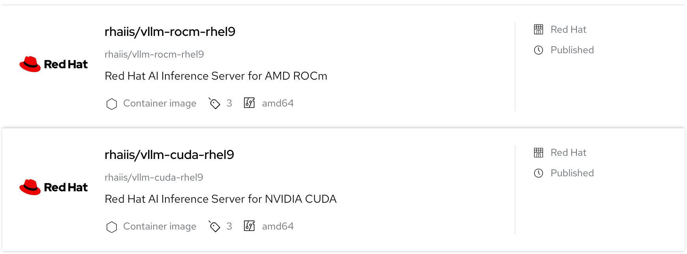

Red Hat AI Inference Server (RHAIIS)
Available as a standalone product and included in Red Hat OpenShift AI and Red Hat Enterprise Linux AI. AI inference server provides a powerful and flexible solution for deploying high-performance large language models across any hybrid cloud environment.
RHAIIS provides a hardened, supported distribution of the vLLM software via pre-packaged containers, depending on GPU type.

Key Features of RHAIIS
At its heart, RHAIIS is built on the vLLM serving engine. The vLLM open-source project is renowned for its high-throughput and memory-efficient performance, achieved through innovative techniques like PagedAttention and continuous batching.
-
PagedAttention: This technique optimizes GPU memory management by virtualizing the key-value (KV) cache for each request. It addresses memory wastage and lowers costs by consuming less memory.
-
Continuous Batching: It processes requests as they arrive instead of waiting for a full batch to be accumulated, reducing latency and increasing throughput.
-
Tensor Parallelism (TP): This feature distributes LLM workloads across multiple GPUs, within a single node, to reduce latency and increase computational throughput. You can configure this using the
--tensor-parallel-sizeargument. -
Expert Parallelism (EP): RHAIIS includes specialized optimizations for efficiently handling Mixture of Experts (MoE) model architectures.
Model Optimization and Compression
RHAIIS integrates the LLM Compressor library, a Developer Preview feature that provides a unified framework for optimizing and compressing large language models before inferencing.
-
Quantization: This technique converts model weights and activations to lower-bit formats (such as INT8) to reduce memory usage.
-
Sparsity: It sets a portion of model weights to zero, enabling more efficient computation.
| For RHAIIS 3.2, LLM Compressor is a Developer Preview feature and is not included in the standard container image. The product does, however, support multiple quantization variants; AMD GPUs support only FP8 (W8A8) and GGUF formats. |
Deployment Portability and Multi-Accelerator Support
RHAIIS is delivered as a container image downloaded from Red Hat Registry, which enables deployment flexibility and across various connected environments.
| Environment | Supported Versions | Deployment Notes |
|---|---|---|
OpenShift Container Platform (self-managed) |
4.14-4.19 |
Deploy on bare-metal hosts or virtual machines. |
Red Hat OpenShift Service on AWS (ROSA) |
4.14-4.19 |
Requires ROSA STS cluster with GPU-enabled P5 or G5 node types. |
Red Hat Enterprise Linux (RHEL) |
9.2-10.0 |
Deploy on bare-metal hosts or virtual machines. |
Linux (not RHEL) |
Supported under third‑party policy deployed on bare‑metal hosts or virtual machines. OpenShift Container Platform Operators are not required. |
|
Kubernetes (not OpenShift Container Platform) |
Supported under third‑party policy deployed on bare‑metal hosts or virtual machines. |
The server is engineered with robust multi-accelerator support for a diverse range of hardware. RHAIIS 3.2 supports the following data center-grade accelerators:
| NVIDIA GPUs: | AMD GPUs: | Google TPUs: |
|---|---|---|
Ampere: A2, A10, A16, A30, A40, A1000, L40S |
AMD Instinct MI210 |
TPU v6e (Developer Preview) |
Ada: L4, L40, L40S |
AMD Instinct MI300X |
|
Hopper: H100, H200, GH200 |
||
Blackwell: B200, RTX PRO 6000 Blackwell Server Edition |